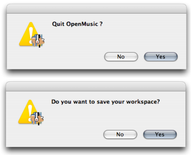
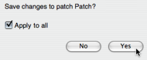

OpenMusic DocumentationHiérarchie de section : OM 6.6 User Manual > Going Through an OM Session > Quitting OM and Saving
OpenMusic DocumentationHiérarchie de section : OM 6.6 User Manual > Going Through an OM Session > Quitting OM and Saving
Navigation : page précédente | page suivante
Attention, votre navigateur ne supporte pas le javascript ou celui-ci à été désactivé. Certaines fonctionnalités de ce guide sont restreintes.
Quitting OM and Saving
Quitting OM
To quit OM :
- choose
OM X.X.X / Quit - press
Cmd+q.

OM always asks if the current workspace must be saved when quitting.
Two dialogue windows will open successively
to ask you to confirm quitting : choose
Yes,to save the current workspace : choose
YesorNo.
Saving a Workspace and its Content
Saving Files, Folders and Workspaces
To save the content of an item :
Saving a workspace or a folder triggers the saving of its settings and unsaved content. The saving dialogue window asks if unsaved items have to be saved. The All modified items are saved in the corresponding workspace folders. |

|
Full Information About the Workspace
Références :
Navigation : page précédente | page suivante
A propos...(c) Ircam - Centre Pompidou